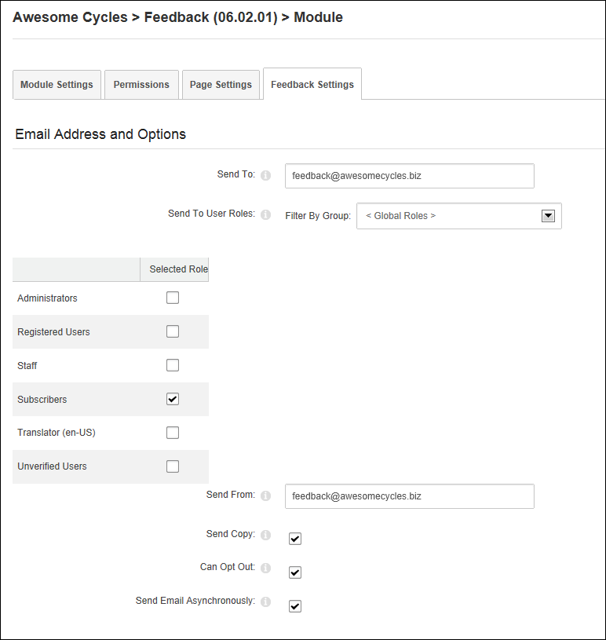

Configuring Email Addresses and Options Settings
How to configure the optional email addresses and user roles who will receive feedback, as well as other email options using the Feedback module.
-
- Select the Feedback Settings tab.
- Go to the Email Addresses and Options Settings section.
- In the Send To text box, enter the email address of the recipient of feedback sent from this module.
- At Send To User Roles, beside each security roles whose users are to be recipients of the feedback.
- In the Send From text box, enter the email address to be used as the default From email address. The email address set at this field overrides the one entered by the user in the Email field on the feedback form. This value is not displayed to users. This setting is useful if you find feedback is being blocked by Spam filters.
- At Send Copy, to send a copy of the message to the sender - OR - to disable this feature. If this option is unchecked, skip to Step 9.
- At Can Opt Out, to display the Send Copy? check box on the Feedback module that enables users to opt out of receiving a copy of their message by email - OR - to remove the opt out option and automatically send a copy to the sender.
- At Send Email Asynchronously, select from these options:
- Mark
 the check box to send email asynchronously. Emails are sent as a background task. This can be useful it feedback is emailed to a large number of recipients.
the check box to send email asynchronously. Emails are sent as a background task. This can be useful it feedback is emailed to a large number of recipients. - Unmark
 the check box to send emails immediately.
the check box to send emails immediately.

- Click the Update link.